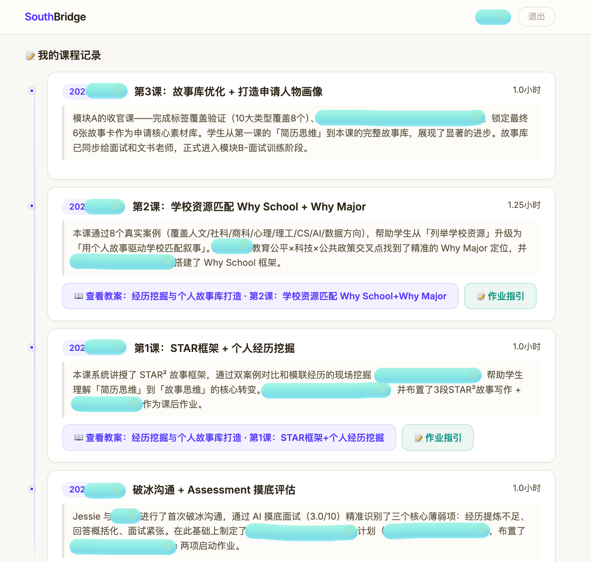
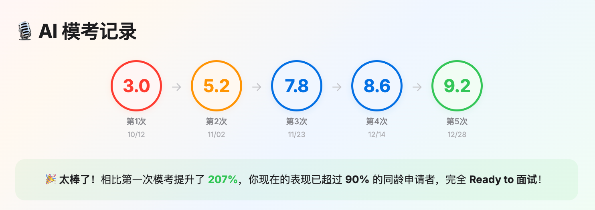
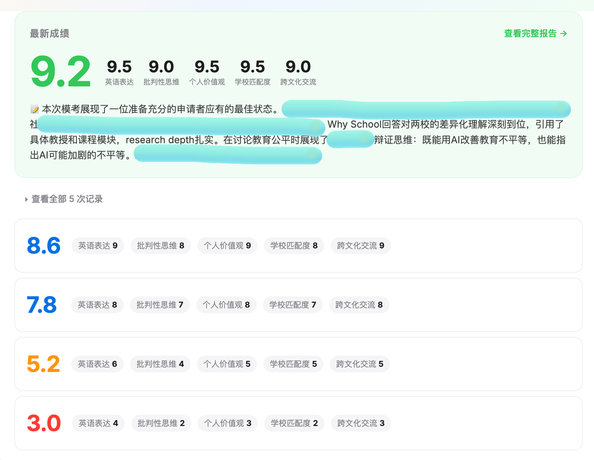

Student Progress
SouthBridge 学生进度管理平台
从学生入学到申请季结束，全流程覆盖的教务管理系统。教师高效协作、学生自助查看、家长透明跟踪——一人运营，百人规模。

每节课后自动生成结构化课堂笔记，不再依赖教师手动整理。用三个模块把一节课最关键的东西全部浓缩——学生复习有抓手，家长一眼看懂孩子学到了什么。
课后必须完成的练习与任务。学生清楚下一步做什么，家长看得见进展。
本节课最核心的知识浓缩，一眼抓住重点，复习不再回看整节课。
课堂中挖掘出的个人经历，直接沉淀进申请文书库，好素材不再流失。

每一节课都沉淀成一条带摘要的记录——这节课讲了什么、布置了什么作业、教案在哪，按时间线排好。学生和家长随手一翻，就能回顾从第一课到现在的完整进步轨迹。
- 每节课一条记录：标题 + 时长 + 课程摘要 + 作业指引，倒序排列
- 摘要不只写「上了什么」，还写「进步了多少」，家长一看就懂

不是只上课就完了。每一次 AI 模拟面试都自动打分，从摸底一路涨到考前——用的就是和真实考场完全一样的 AI 面试形式（独家开发），能真实反映真实考核的大概分数。分数稳定到 8~10 分再进考场，自然不紧张。
- 五次模考 3.0 → 5.2 → 7.8 → 8.6 → 9.2，一路爬升
- 对比首次模考提升 207%，超过 90% 同龄申请者
去年全省第一、拿 A 档的同学：摸底 3 分 → 考前稳定 9 分。大多数拿 A 档 / 省前 10% 的同学，摸底 3~4 分，考前稳定在 7.5~10 分。

每次面试不只给一个总分，还按英语表达、批判性思维、个人价值观、学校匹配度、跨文化交流五个维度逐项打分，哪项弱一目了然。
- 五个维度逐项评分，学生清楚知道该往哪使劲
- 查看全部 5 次记录，每次都有完整维度评分
排课不再是一个个手动拉群、发链接。选定时间和学生，系统自动创建飞书视频会议，自动生成录制链接——教师只需准时出现。
- FullCalendar 周视图，每个学生独立颜色标识，排课冲突自动提示
- 一键创建飞书会议 → 自动录制 → 任何人可加入，省去所有沟通成本
17 套教案覆盖 6 大教学模块，不再是"这节课讲什么？"的即兴发挥。每份教案包含课前准备清单、课中流程节点、课后作业模板——新手老师也能快速上手。
- 经历挖掘、面试训练、思辨分析、写作、圆桌讨论等 6 大模块全覆盖
- 标准化流程确保教学质量一致，快速培训新教师
学生拥有独立的个人仪表盘——查看笔记、完成作业、追踪面试进步、管理故事素材库，无需等待老师回复。从"老师我上次的笔记在哪"变成"我自己看就好"。
- 双角色设计：教师端专业蓝紫，学生端暖纸日记风
- 故事素材库支持 STAR 框架录入，标签覆盖率矩阵找出素材盲区
每个学生走到哪个阶段——选校、文书、提交、面试、录取——像游戏关卡一样清晰。进度条 + 任务清单，学生、老师、家长三方透明。
- 可视化流水线展示三阶段申请进度，阶段任务支持点击勾选完成
- 飞书自动创建学生文件夹 + 信息收集表 + 活动清单，零手工初始化